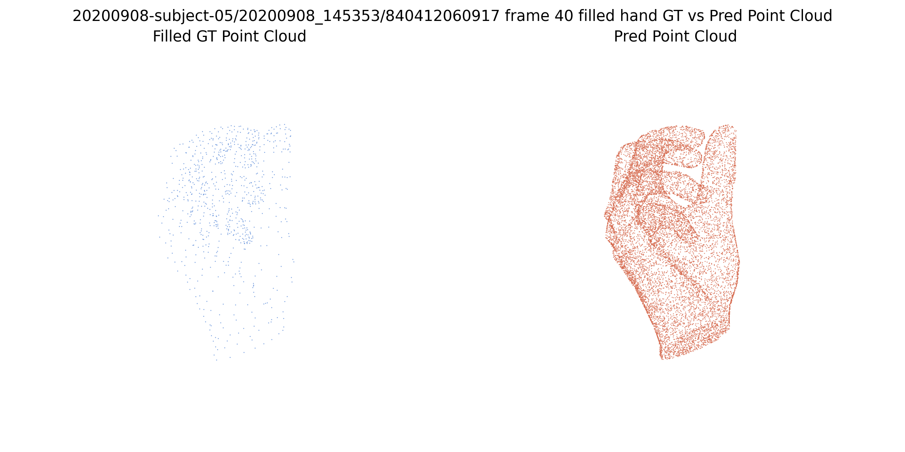
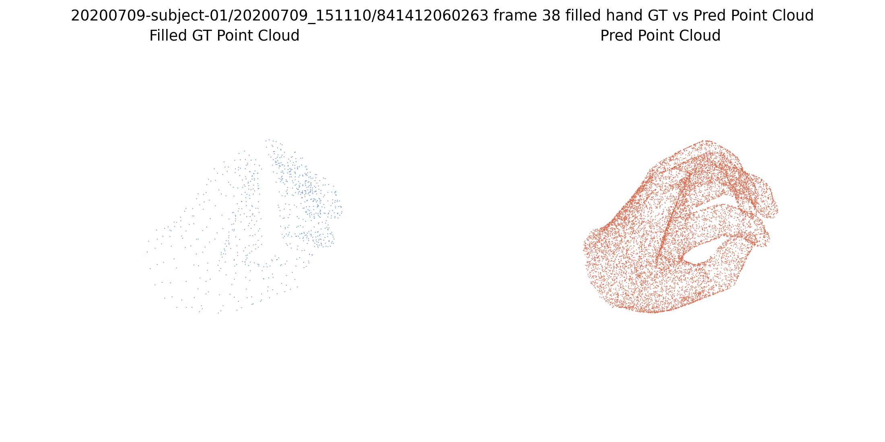
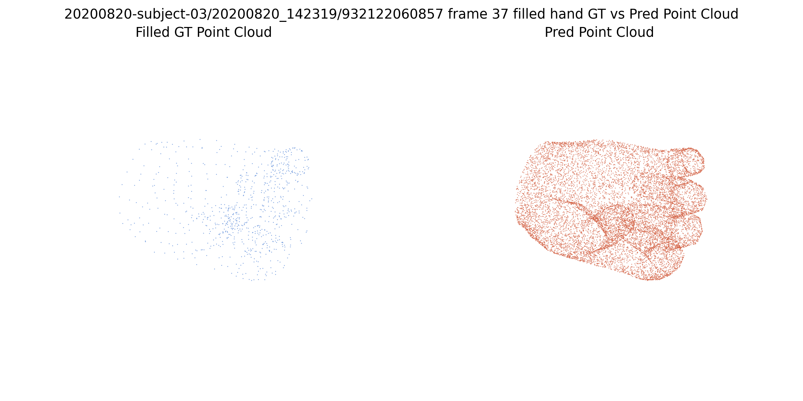
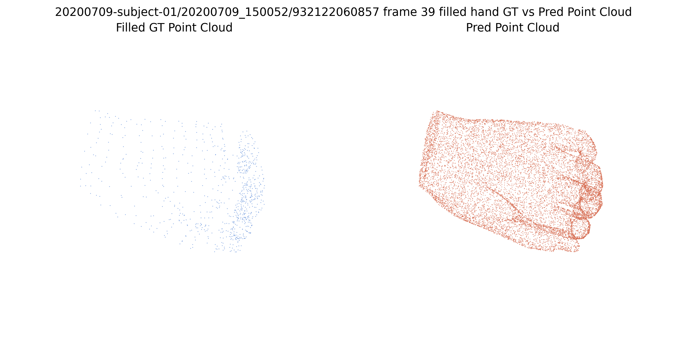
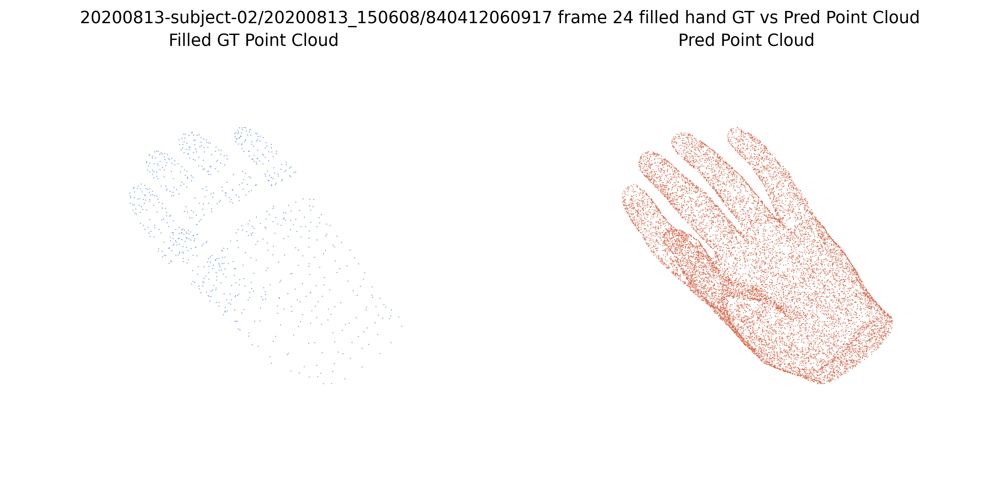

HOI3R experiment publish node
PASS
Dexycb Bridge Hand 5seq Fillholes Officialized Points
all 5 filled-hand samples became watertight and reduced hand mean active voxels from `1.60M` to `206k`, with mean vertex-ratio drop from `2060.89x` to `264.40x`. Strongest current causal evidence that the open wrist boundary is a major driver of the bridge-hand failure on the officialized path
Context
Experiment goal
用和 `P0-DEXYCB-BRIDGE-HAND-5SEQ-OFFICIALIZED-POINTS-001` 完全相同的 5 个 DexYCB bridge hand 样本、同一条 officialized shape path、同一套权重和同一套点云可视化，只增加一个变量: 在进入 voxelization 之前先调用官方 `Mesh.fill_holes(max_hole_perimeter=1.0)` 把手腕开口封住。目标是直接回答 open wrist boundary 对 bridge-hand failure 的贡献有多大。
Conclusion
PASS。当前最强的因果结论是：bridge-hand 在 officialized path 上的大部分异常不是“桥接来源”这个标签本身，而是 bridge mesh 仍然保留了 open wrist boundary。只做官方 `fill_holes`，不做 PCA canonicalization，也足以把 voxel count 和 decoded vertex ratio 整体压低约 `7.8x`。
Visual Evidence

Point Compare
Experiment artifact mirrored into the public asset bundle.

Point Compare
Experiment artifact mirrored into the public asset bundle.

Point Compare
Experiment artifact mirrored into the public asset bundle.

Point Compare
Experiment artifact mirrored into the public asset bundle.

Point Compare
Experiment artifact mirrored into the public asset bundle.